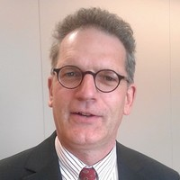

|  |
Roeland Cerfonteijn Engineer, Microsoft 365 Azure Identity, Security, Purview, Intune Email | LinkedIn | GitHub |
Email: RoelandC@hotmail.com | LinkedIn
Expert in Microsoft technologies with extensive experience in both on-premises and online environments. Specialized in SharePoint, Power Platform, Azure, and Microsoft 365. Skilled in document management systems (DMS, ISMS, DQS) and security frameworks like ISO 27001 and NIS2. Passionate about Infrastructure-as-Code using MS365DSC and CIS.
Experienced in server/network setups, certificates, reverse proxies (F5/Citrix), and large migrations using ShareGate and PowerShell. Proficient in PowerShell modules including PNP.PowerShell and Microsoft365DSC. Familiar with Azure DevOps, app registrations, and service principals.
Continuous learner in cloud services (Azure IaaS/PaaS), Agile, DevOps, MS365, Power Platform, and Power BI. Hands-on with canvas and model-driven apps, flows, virtual agents, dataflows, logic apps, and AI-based connectors.
Experienced in agile sprints using Azure DevOps. Advocates for collaboration and knowledge sharing with business users and operational staff.
Role: SharePoint Analyst Consultant
Role: Power Platform Scout
Role: Engineer/Consultant Microsoft Technologies
Role: Electrical Engineer